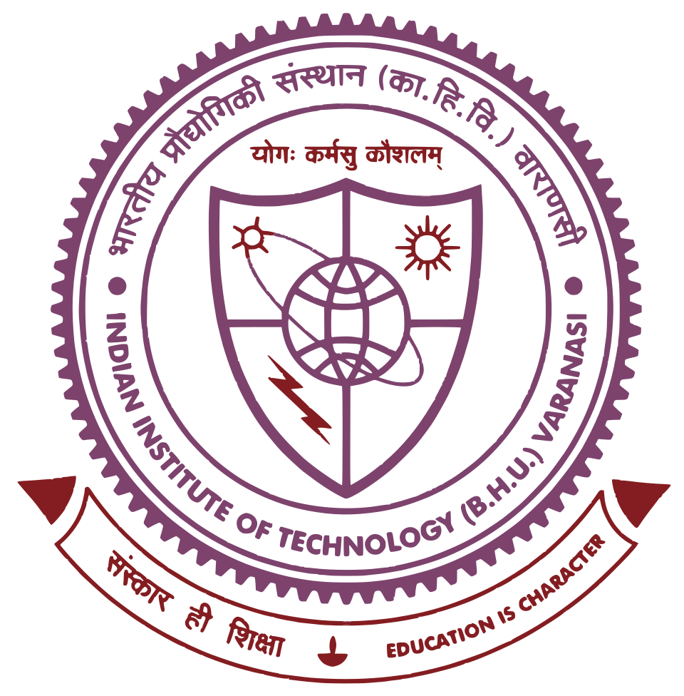

Current position
Postdoctoral Research Associate
Department of Physics, Boston University
Nov. 2024 – Present
Boston, MA, USA
Mode-specific excitation of structural dynamics in quantum materials using THz and mid-infrared pulses
Education
Doctor of Philosophy
Materials Science and Engineering · University of Wisconsin–Madison
09/2018 – 10/2024
Madison, WI, USA
Thesis: Ultrafast Nanoscale Structural Dynamics in Complex Oxide Thin Films and Heterostructures: Implications on Electrical and Magnetic Phenomena
·
Link
Master of Science
Materials Science and Engineering · University of Wisconsin–Madison
08/2018 – 05/2021
Madison, WI, USA

Bachelor of Technology
Ceramic Engineering · IIT (BHU) Varanasi
07/2013 – 05/2017
Varanasi, India